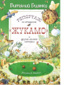

Репортаж со стадиона "Жукамо" и другие лесные истории

Добрые волшебники - писатель Виталий Бианки и художница Елена Нецкая - ведут читателя по сказочной тропе в большой мир родной и очень близкой природы. И это путешествие наполнено радостью первых самостоятельных открытий! Слышите: весь мир вокруг оживает и наполняется голосами? Это лесные жители рассказывают нам свои истории. Интересно, о чем они нам поведают?